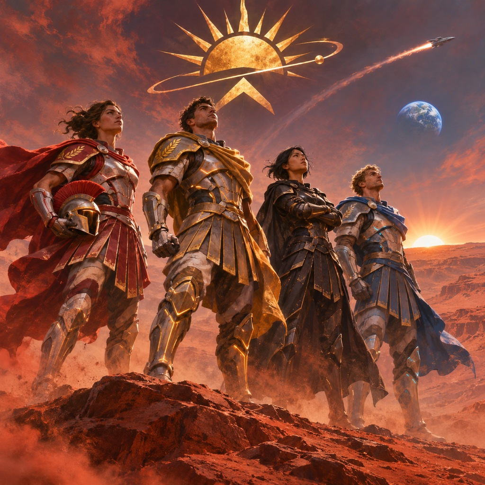
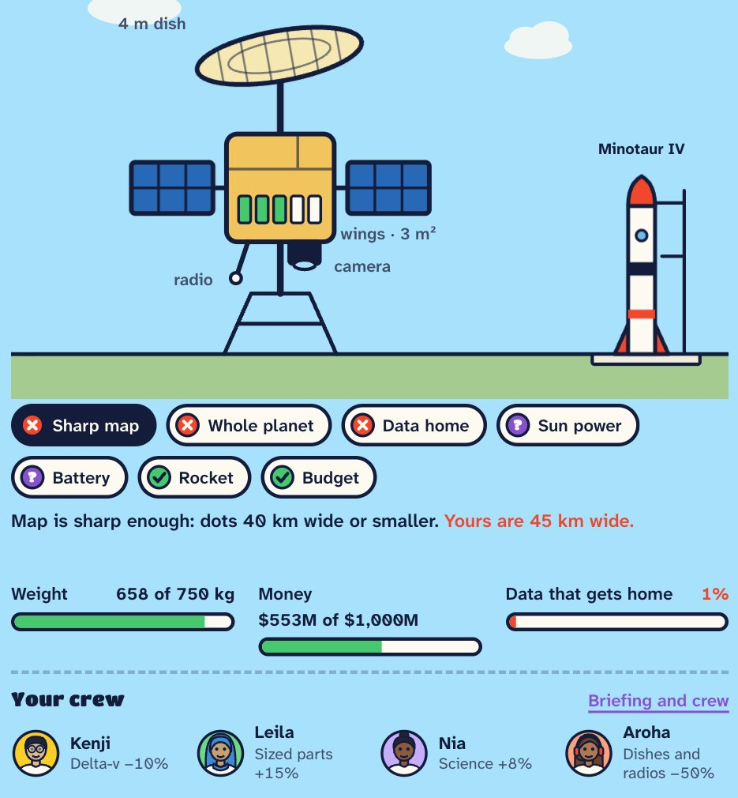
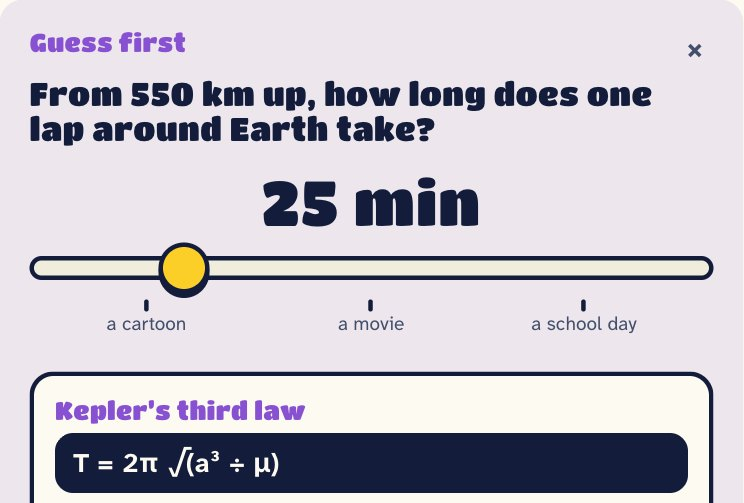
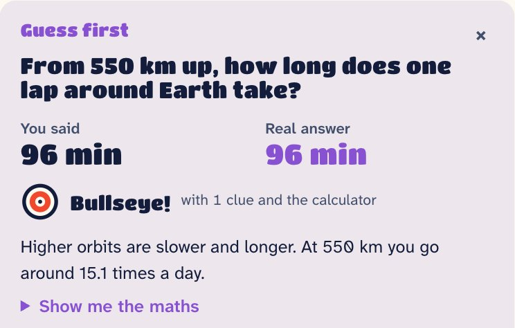
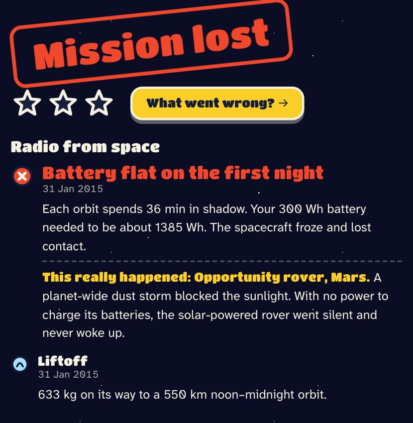
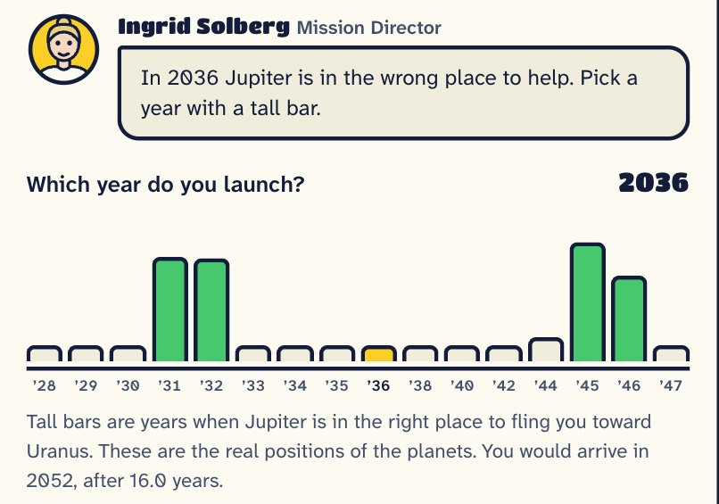
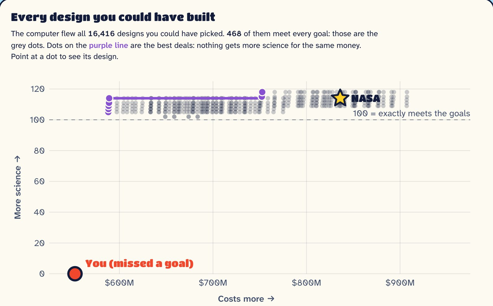
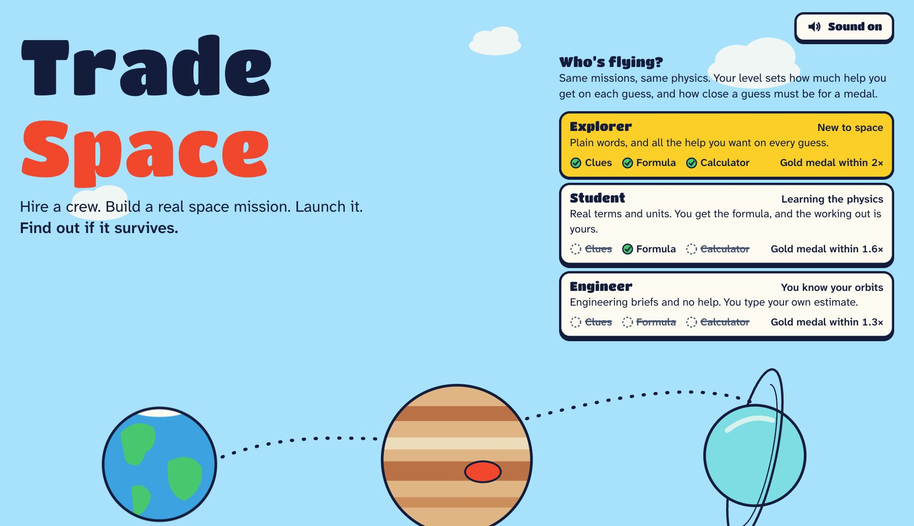

Trade Space
Guess like an engineer. Fly what NASA flew. Design what NASA hasn’t.
A browser game where you design a complete space mission, and every number is real physics.
Team Rising Crest · NASA Space Apps Challenge 2026
Challenge: Space Mission Design Game

The problem
Students learn subsystems one at a time. They never see the whole trade space.
Our answer: one whole mission in about 10 minutes.
- Hire a four-person crew. Each member brings one edge.
- Choose the orbit, instruments, power, communications, trajectory and rocket.
- Watch a live budget of mass, cost, power and data.
- Launch, and find out if it survives.

Engineer’s Gut: guess first
Numbers stay locked until you estimate them. You get a medal for how close you were, then a Why? card shows the formula with your own numbers.


Explorer
Clues, the formula and a calculator.
Student
The formula only. You do the working out.
Engineer
No help. Strict medals.
Replay history
Fly real missions against NASA’s real design and real events.
SMAP, 2015
The 26 geomagnetic storms of 2015, from NASA DONKI. SMAP’s real radar failure on 7 July 2015.
Juno, 2011
Solar power at 1/27 sunlight. The Earth flyby, Jupiter arrival and the 2016 valve problem.

Design the future
The Uranus Orbiter & Probe: NASA’s top priority, and not flown yet.
- Pick the launch year from a window chart built from real Jupiter and Uranus positions (JPL Horizons).
- Face RTG decay, a 19 AU link budget, the probe and aerocapture risk.
- Arrive before Uranus’s equinox, around 2049.


The Pareto frontier
After each flight the game tries every possible design. There is rarely one right answer.
Checked against real spacecraft
- SMAP
- 867 kg. Real: 944 kg.
- Juno
- 3,432 kg. Real: 3,625 kg.
- Uranus
- The search alone lands on NASA’s concept study: 2031 launch, Jupiter assist, 3 RTGs.
Why it matters
Students rarely get to experience a whole mission, from concept to operations.
- About 10 minutes per mission.
- Any laptop or phone. No account, no download.
- Every number can be traced to its source.
Next steps
Play it now
trade-space-one.vercel.app